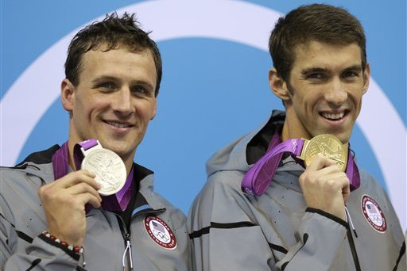
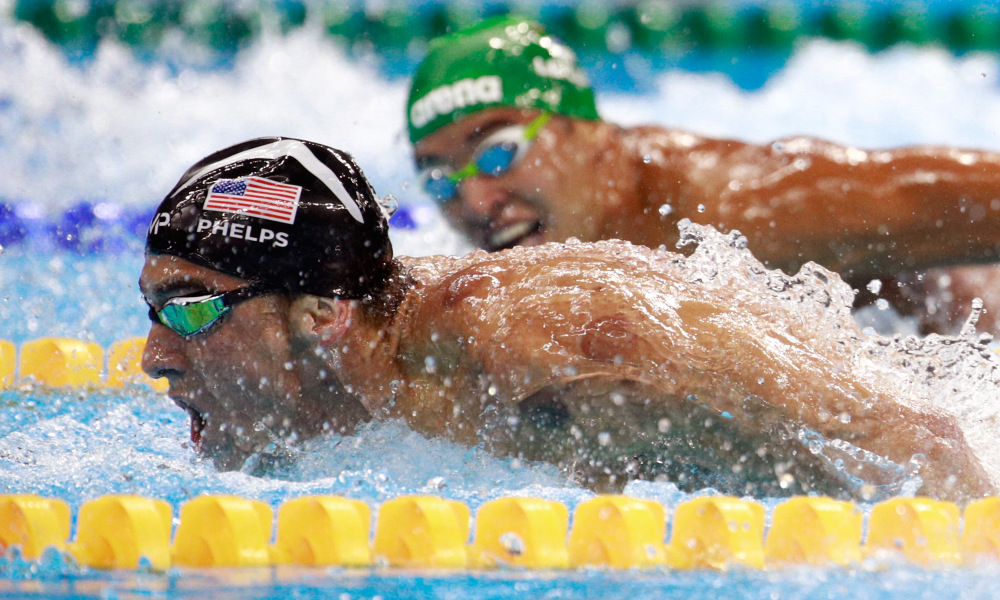

História do esporte - Principais adversários
Ryan Lochte
A rivalidade dos dois é muito antiga, mais de 12 anos de batalhas nas piscinas com vitorias para ambos os lados, favorecendo é claro, Michael Phelps, porem fora das piscinas, os dois sao bons amigos. Essa rivalidaede é melhor visualizada na modalidade 200m medley individual, com Phelps ganhando todas as vezes em Olimpiadas desde 2004 e Lochte vencendo nos mundiais desde 2009. O atual record Mundial pertence a Lochte.
Lochte fez sua estreia olímpica nas Olimpíadas de 2004, em Atenas, após terminar em segundo nos 200m medley sendo superado apenas por Michael Phelps. Ele também se classificou junto com a equipe dos EUA para a final dos 4x200m livres. Nos Jogos Olímpicos de Atenas, Lochte nadou com Michael Phelps, Klete Keller e Peter Vanderkaay na prova dos 4x200m livres, e perturbaram a equipe australiana para conquistar o ouro. Ele também se apertou para conquistar a prata de George Bovell e László Cseh nos 200m medley, ficando atrás do ouro de Phelps.
Chad le Clos
Um jovem nadador sul-africano promissor da nova geraçao da nataçao. Nos Jogos Olímpicos de Londres 2012, ficou em quinto lugar nos 400 metros medley, segundo lugar nos 100 metros borboleta e venceu a prova dos 200 metros borboleta, superando Michael Phelps.
Especialista nos 200m borboleta, a rivalidade com Phelps ja e mais recente, começando em 2012, quando Clos surpreendeu o mundo vencendo Phelps nos 200m borboleta impedindo o seu tri olimpico, e na olimpiada de 2016, o jovem chegou em segundo, com Phelps na primeira colocação.
Milorad Čavić
Čavić ficou famoso por ter perdido o ouro olímpico dos 100 m borboleta nos Jogos .gif) de Pequim em 2008 para Michael Phelps por apenas 0,01 centésimo de segundo, após ter liderado toda a prova e aparentemente tê-la vencido. Porém, no final da prova realizou uma péssima chegada, o que o fez obter a prata. Čavić e Phelps disputam a supremacia nas piscinas na categoria 100m Borboleta, principalmente entre 2008 e 2009, protagonizando uma das chegadas mais inesqueciveis da historia do esporte.
de Pequim em 2008 para Michael Phelps por apenas 0,01 centésimo de segundo, após ter liderado toda a prova e aparentemente tê-la vencido. Porém, no final da prova realizou uma péssima chegada, o que o fez obter a prata. Čavić e Phelps disputam a supremacia nas piscinas na categoria 100m Borboleta, principalmente entre 2008 e 2009, protagonizando uma das chegadas mais inesqueciveis da historia do esporte.